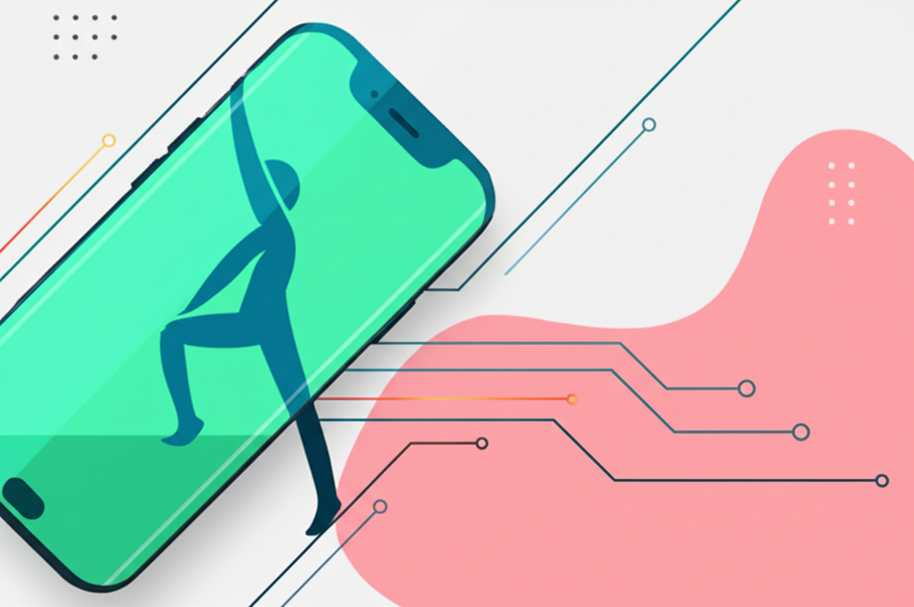

今天的新聞涵蓋了健康、科技和生活方式等多個方面。從蘋果新機的預覽到體重管理的新聞，再到日本人長壽的秘訣，讓我們一起來看看今天的重點新聞。
自由電子報3C科技帶來了蘋果 iPhone 16 的搶先體驗，其中相機控制鍵的設計引人注目。同時，他們也回顧了本週五大科技新聞，包括 iPhone 16e 的銷量預測和 Google 新機的消息。這對於科技愛好者來說，是了解最新趨勢的重要資訊來源。
今天的健康新聞主要圍繞體重管理展開。多篇文章提到了減重手術、健康體重管理年活動，以及飲食和生活習慣對於體重的影響。例如，輔英科技大學附設醫院強調健康減重法，淄博市舉辦了健康體重管理年活動，風傳媒則探討了日本人長壽的秘訣，其中包括「腹八分目」的飲食習慣。壓力與睡眠不足也可能導致肥胖，中醫師對此提出了「肝氣鬱滯型」的觀點。此外，愛料理分享了吃箭筍有助減重的資訊，但提醒腸胃道病患需要忌口。
YouTube 頻道《新台灣大體驗》分享了海釣與馴鷹的雙重體驗。節目中，主持人體驗了馴服老鷹，並將老鷹用於果園的無毒管理。這種結合傳統技藝與自然生態的方式，提供了一種新的生活體驗視角。
今天的新聞內容豐富多元，涵蓋了科技發展、健康管理和生活體驗等多個領域。科技方面，iPhone 16 的消息和科技新聞回顧，展示了科技發展的最新趨勢。健康方面，體重管理和健康生活方式的討論，提醒我們關注自身健康，並從飲食和生活習慣入手改善。生活體驗方面，海釣與馴鷹的節目，則提供了一種新的休閒方式選擇。 總體而言，今天的資訊都與我們的生活息息相關，值得我們關注和思考。